中文
中文Tang Nano 20K 开箱
更新历史
| 日期 | 版本 | 作者 | 更新内容 |
|---|---|---|---|
| 2023-05-22 | v0.1 | wonder |
|
Tang Nano 20K 主要有游戏套餐和普通开发板两种购买选项。
初次通电
Tang Nano 20K 默认的固件内容是 litex ，并且可以在 github 直接下载固件。
上电后可以看到板卡上的六颗 LED 以流水灯样式运行着。
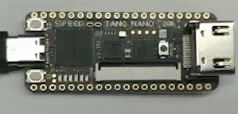
通电后 win10 和 win11 会自动加载驱动，然后在电脑的设备管理器中可以看到至少有一个串口设备，这时可以使用 Mobaxterm 这类支持串口的软件来打开开发板上的串口。
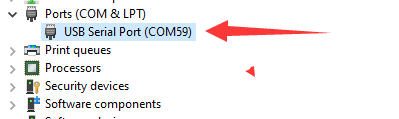
设置波特率为 115200，然后打开开发板上的串口，就能进入默认 litex 固件的终端了。

使用 Tab 自动补全命令操作可以看到有一些指令能够让我们直接使用。
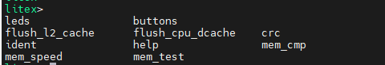
以最简单的 leds 为例，输入 leds 命令。
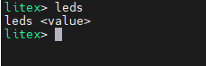
可以看到它要求 leds 命令后面加上一个 value .
下面是在串口终端中输入了 leds 62 后板子上 led 的变化。

可以看到板子上只有一颗 LED 亮起。
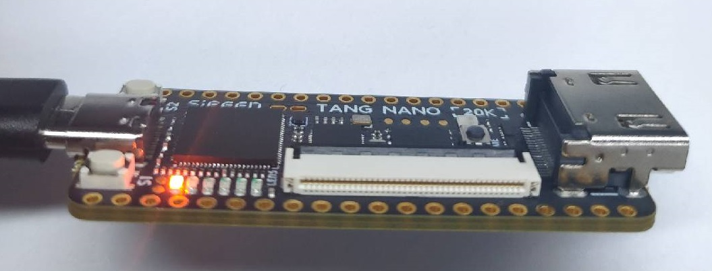
如果输入的数字过大的话，它会在串口提示将 led 状态设置成了 0xffffffff。
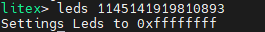
隐藏功能
上面的 litex 相关的终端操作都是在 FPGA 上运行的，Tang Nano 20K 除了 GW2AR-18C FPGA 外，还有一个板载的 BL616 芯片，可以进入它的终端来进行其他操作。
和前面一样，在 Mobaxterm 中打开串口之后，可以使用组合键 Ctrl + x 然后 Ctrl + c，最后按下回车来进入 BL616 芯片终端。

然后按下回车就到了终端了。支持 tab 补全命令。
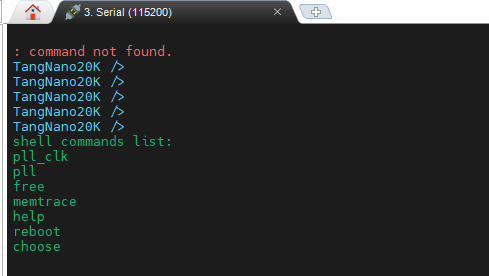
这里主要需要关注 pll_clk 和 choose 这两个命令。
pll_clk
Tang Nano 20K 板子上带有一颗 MS5351 精准时钟发生器，它由 BL616 终端的 pll_clk 命令来控制。
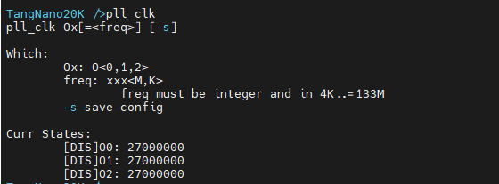
MS5351 支持三路时钟输出，在原理图中可以看到以下对应关系：
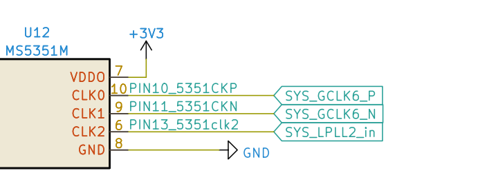
上图表示 CLK0 时钟连接到了 FPGA 的 PIN10 引脚，CLK1 时钟连接到了 FPGA 的 PIN11 引脚，CLK2 时钟连接到了 FPGA 的 PIN13 引脚.
- 配置 CLK1 输出 50M 时钟
pll_clk O1=50M
 |
① 输入命令后可以看到下面有一些 log ② 再次输入 `pll_clk` 查看当前的配置 ③ 可以看到 O1 目前是 50M 配置 ④ 此处的 [EN] 表示 O1 正常工作，[DIS] 表示被禁用 |
- 禁用 CLK1
pll_clk O1
| 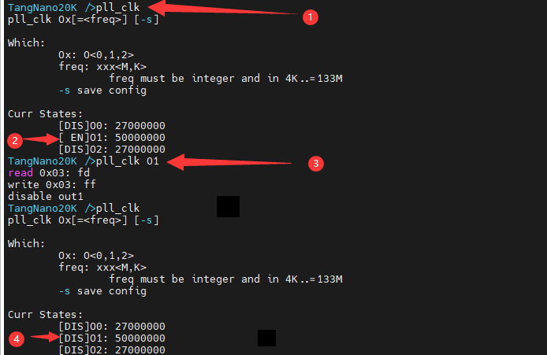 |
① 查看当前配置状态 ② CLK1 正常工作状态 ③ 执行禁用 CLK1 指令 ④ CLK1 被禁用 |
- 保存配置
pll_clk -s
- 设置 CLK2 输出 100M 时钟并且保存
pll_clk O2=100M -s
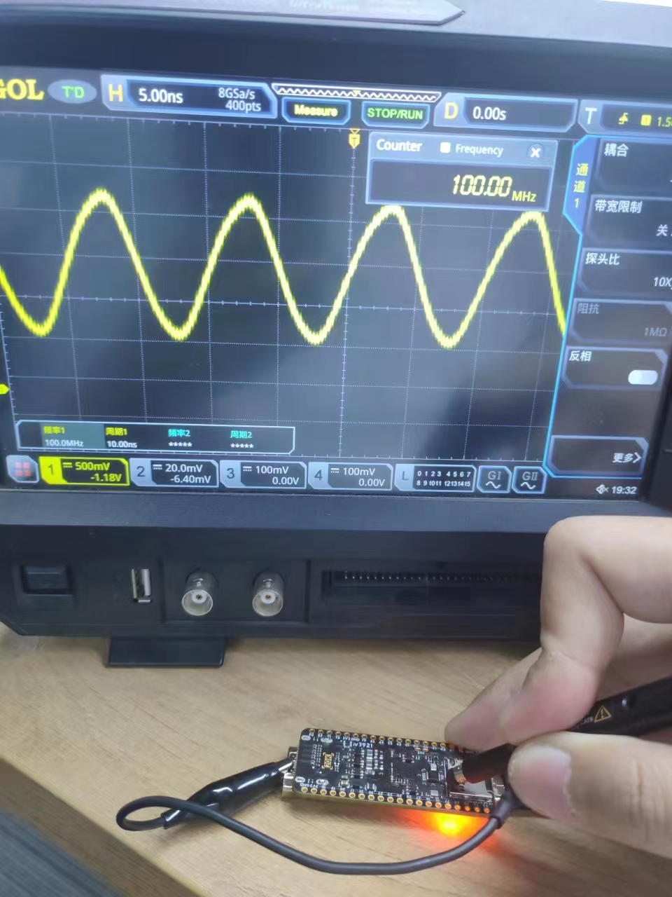
choose
choose 命令在 BL616 芯片中的作用是选择 BL616 与 FPGA 的通信方式。
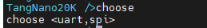
打开串口时默认使用的是 uart 模式。在使用命令 Ctrl + x和 Ctrl + c，再敲下回车后， BL616 退出串口模式，回到终端模式。
uart模式测试
在 BL616 终端执行 choose uart 命令，BL616 与 FPGA 进行串口通信。
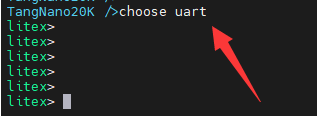
输入完命令后终端会看起来卡住了一样，实际上这是因为 FPGA 没有向 BL616 发送串口消息。
默认的固件没有被清除的话，继续敲击回车就会重新回到 litex 终端了。
与前面的叙述一样，使用组合键 Ctrl + x和 Ctrl + c，再敲下回车后， BL616 退出串口模式，回到终端模式。
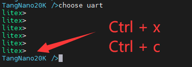
spi模式测试
SPI 模式时，BL616 作为 FPGA 的 SPI 从机，接收 FPGA 发送过来的数据。
游戏机套装
Tang Nano 20K 可以加载/运行开源 FPGA NES 模拟器 NESTang，下面简述使用步骤。源码可以查看 Tang Nano 20K nestang github example 或者 NESTang。
硬件准备
- 一块 Tang Nano 20K
- 至少一个 Joystick 手柄和手柄转接板
- 一张 TF 卡与一个读卡器
- 一个面包板 (用来组合固定住板子)
- HDMI 显示器
环境准备
- Windows：Gowin Programmer ， balenaEtcher 和
python - Linux: Openfpgaloader 和
python
Linux 烧录方法可以参考 Tang Nano 20K nestang github example，下面主要基于 Windows 系统来说明使用步骤。
烧录 FPGA 固件
使用 Gowin Programmer 将 这个固件 烧录到 FPGA 的 Flash 中。
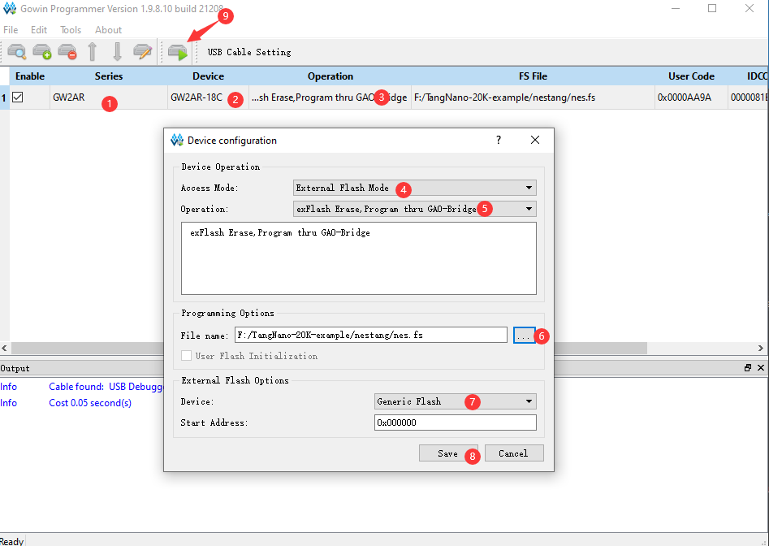
制作游戏镜像
使用 这些文件（都要下载），将想要运行的 NES 游戏 转换成能被 FPGA 识别的文件镜像。
使用下面的命令来将 1.nes 2.nes 3.nes 三个 NES 游戏转换成游戏镜像文件 (games.img)。
python nes2img.py -o games.img 1.nes 2.nes 3.nes
提示 PIL 不存在时，手动通过 pip 安装一下。
在当前目录下就有生成的游戏镜像文件 games.img 了。
烧录游戏镜像
在 Tang Nano 20K 上，需要使用 TF 卡来存储游戏，因此需要将游戏镜像文件烧录到 TF 卡。
这里使用 balenaEtcher 这个软件。
打开这个软件，选择 Flash from file, 选中之前生成的游戏镜像文件 games.img
会弹出一个警告，此时点击继续。
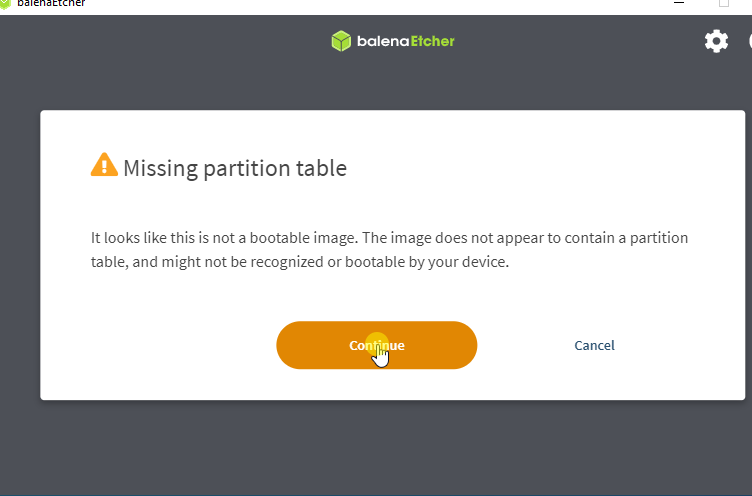接下来选择烧录的 TF 卡，不要选错了盘符。勾选 TF 卡后点击图中 ② 处来结束选择。
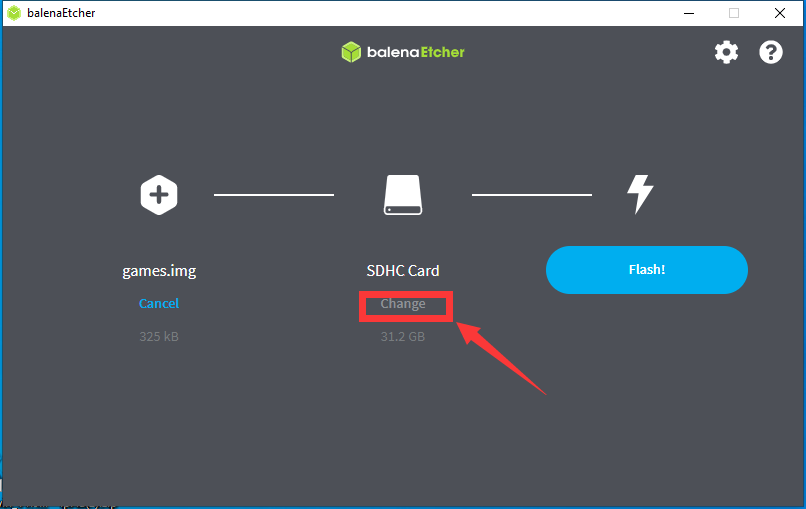 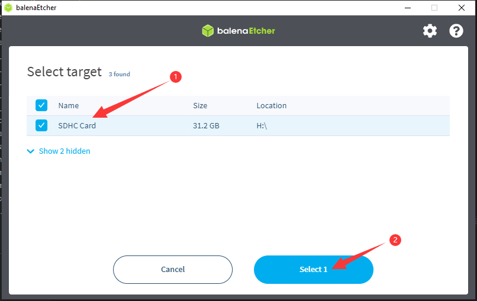点击烧录，提示烧录成功后就可以取出 TF 卡并且将 TF 卡插入到 FPGA 了。
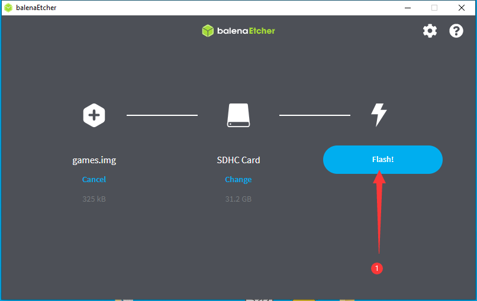 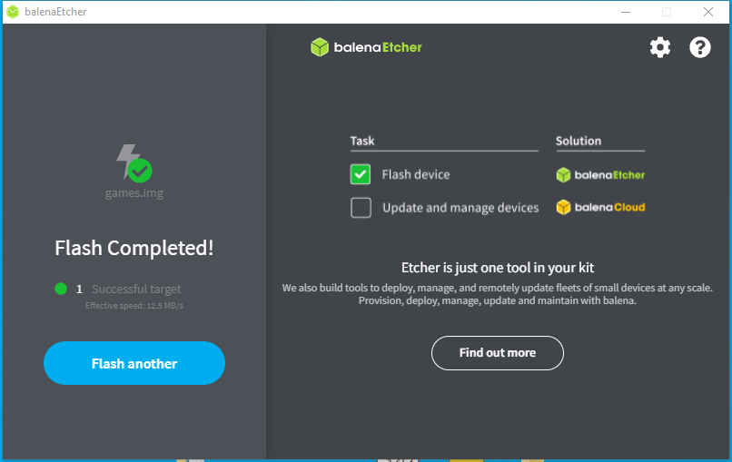组装板子
- 插入 TF 卡到板子中
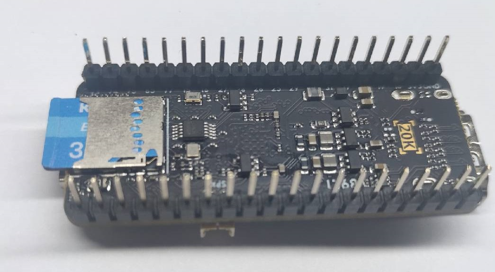
- 将板卡和手柄转接板都连接在面包板上
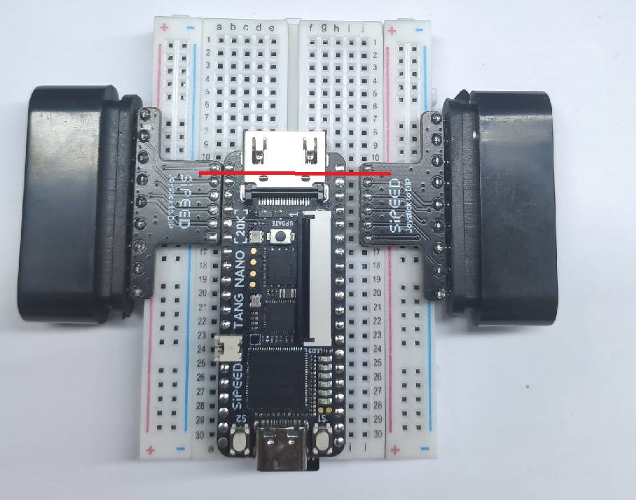
注意上图的红色直线，那表明了手柄转接板与 FPGA 应当对应的引脚
- 连接上手柄和 HDMI 线
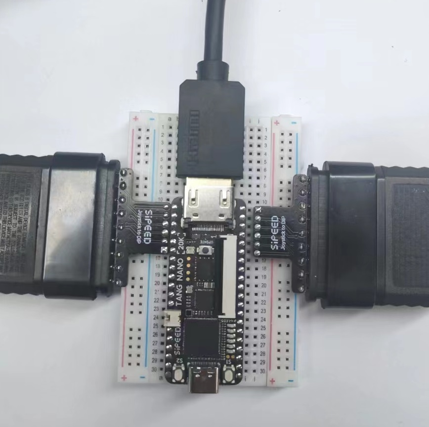
连接双手柄时，玩家 ① 使用的是上图中右侧的手柄
开始游戏
给 Tang Nano 20K 通上电，然后会显示出游戏菜单，里面的游戏数量和名称都是根据制作游戏镜像文件时所使用的 NES 游戏文件和名称来生成的。
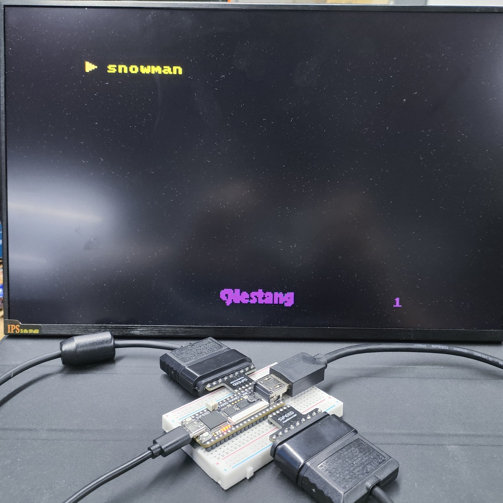
- 按下手柄上的
②或者O来启动游戏 - 按下 FPGA 板子上的
S1来重新进入游戏选单
编程使用
手把手教上手点灯 -> 点我